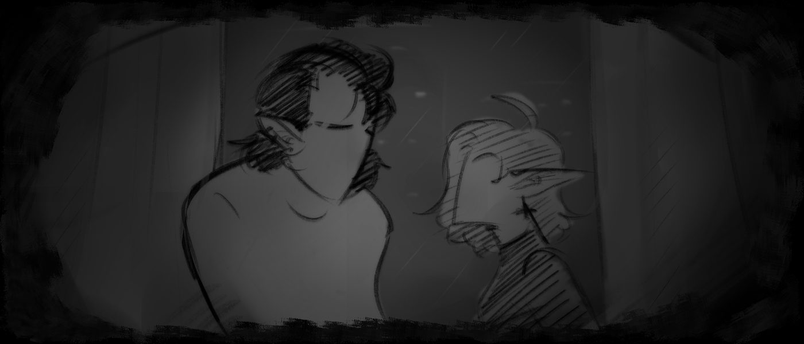
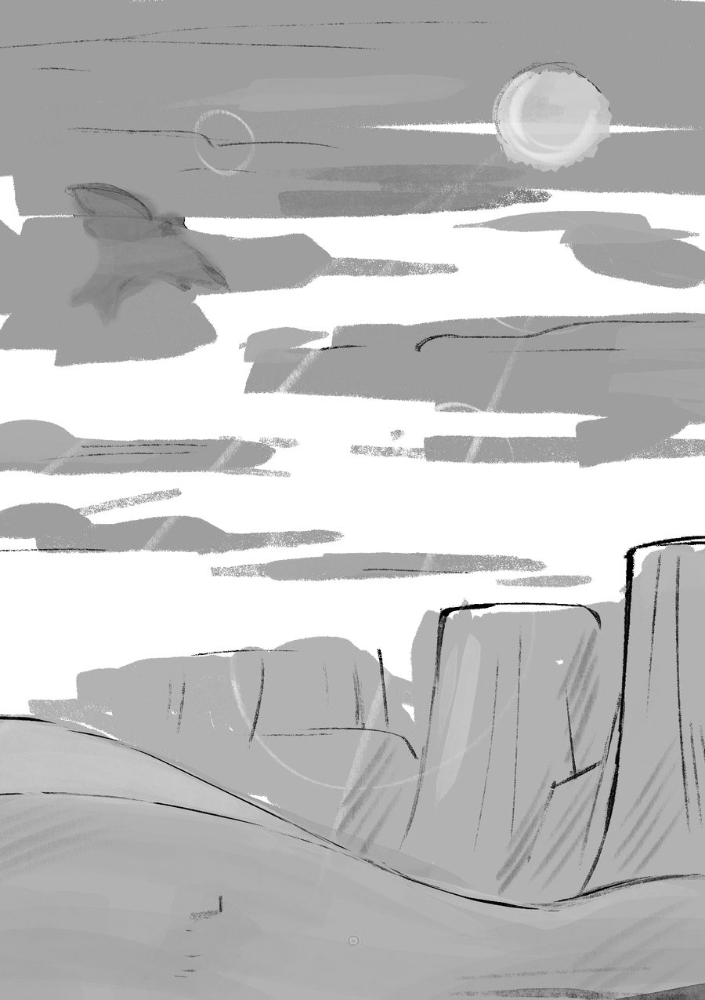

Живые знают, что умрут, а мёртвые ничего не знают,
Екклесиаст 9:5
и уже нет им воздаяния, потому что и память о них предана забвению.
Мир медленно погружался в забвение. Город выглядел мёртвым — вернее, почти мёртвым, когда единственные оставшиеся неоновые огоньки едва ли догорали в тишине наступавшей ночи. За окном пошёл печальный холодный дождик, будто само небо наконец решило выплакаться перед сном, и эта дрожь заглушила даже рёв десятков машин.
— Возвращаясь к предыдущей теме… Я довольно серьёзен по поводу конфиденциальности, абсурдности и прочих негативных качеств этой информации. Будь я на твоём месте, я бы сейчас сбежал, чтобы уши свои поберечь.
У окна — две фигуры; скрюченная, подавленная весом неизвестных бед мужская и лёгкая, изящная, словно приглашающая к себе, женская. Она тянулась к нему, но без излишней нежности, а, скорее, с охотничьим желанием — желанием отнять чужое.
— Я не ты, вот и не убегаю. Это по твоей части, мне кажется, — девушка задумчиво отстранилась. — И вообще, я заслуживаю знать правду после того, что уже успела увидеть. В отличие от некоторых, я не забываю важные моменты своей жизни.
— Да я не… Нет, я просто плохой рассказчик, ты же знаешь. Меня там не было, могу приврать, всё такое… — он уставился на дождь за окном. — Тебе бы с первоисточником поговорить, но вряд ли получится.
— Я думаю, ты не соврёшь. У тебя язык лгать не поворачивается, если в предложении есть его имя.
Последовало короткое молчание. Кажется, самопровозглашённый рассказчик собирался с мыслями, которые буквально разбегались от него во все стороны. Его слушательница заметила на чужом лице какую-то блудную нервную улыбку, будто бы защитный механизм организма, проснувшийся от сильного стресса. «Я ведь поклялся ему собственной жизнью больше никому этого не рассказывать, почему же я теперь соглашаюсь… Ах, Боже, я такой идиот, такой идиот, прости меня, прости…»
— Ладно, может, ты права. Всё равно дело твоё… Только учти, что обладание этими знаниями повлечёт за собой разнообразные последствия, поэтому я снимаю с себя любую ответственность за его реакцию, — он закрылся руками и выдохнул. — Э-эм, даже не знаю, с чего начать, если честно. Все эти рассказы и дневники такие сумбурные, найти там начало и конец было крайне трудно. Но… Я попробую. Попробую познакомить тебя с миром вне нашего понимания.

Скажи, ты когда в последний раз читала художественную литературу? Конкретно фэнтези там, сказки всякие… Я вот, кажется, в последнее время совершенно забыл о существовании книг, да и ты не выглядишь заядлым читателем. Тем не менее, думаю, вполне хорошее сравнение для всего следующего рассказа… Ну, с каким-нибудь там романом про принцев и принцесс. Ладно, это шутка. Просто подводка такая, чтобы я сразу же смог запятнать первые впечатления бесконечным мальстрёмом кошмаров.
Проблема в том, что мы все слишком быстро повзрослели. Мир меняется, мы вместе с ним — сейчас ведущую роль взяли на себя культ саморазвития и науки, поэтому детства у нас, как такового, и не было. В сказки не верили, за волшебным не гнались — только на себя и полагались, как взрослые люди. Мы переступили этот порог и остались один на один с реальностью, отбросив назад все фантазии и надежды на существовании чуда во Вселенной, хоть маленькой капли волшебства и несбывшейся сказочной мечты, и не появлялось даже ни одной мысли о возможном наличии чего-то фантастического здесь, среди нас, среди серой массы, в которую превратились за последние века люди. То место, где мы живём… Оно так далеко от всех сокрытых за нашим куполом тайн. Когда я впервые узнал о мирах за звёздами, я сразу же вообразил себе магическую долину бесконечных приключений — с мечами, артефактами, заклинаниями там всякими… Правда, скажем так, это всё моё искажённое сознание. Отголоски детского восприятия, которые были быстро взяты в цепи взрослым мышлением — так не бывает. Это просто фантазия. Моя фантазия. Хотя, знаешь, мне хотелось верить в ложь собственного рассудка, но, к сожалению, я всё же оказался прав.
Я всегда был агностиком. Прекрасно понимаю, что все эти высшие силы — просто байки, хотя почему-то всё равно по жизни меня преследовало ощущение пристального взгляда, мол, «ну не я всего себя придумал, есть же у Вселенной всё-таки какой-то там план, иначе быть не может». Я как-то раз обсуждал с ним Библию — он насмехался надо мной за мракобесие и неверие, а мне почему-то хотелось плюнуть ему в лицо за излишнюю религиозность. Вот незадача-то, ведь в дураках остался именно я. Не в том плане, в котором изначально представлял, но определённый градус стыда перед миром я испытал уж точно.
Мне сначала жутко не хотелось принимать факт наличия… Богов. И судьбы, которую они предписали абсолютно всему во Вселенной. Хотя, наверное, я совершаю некоторую ошибку, называя их «Богами», но он сказал, что это дозволено в кругах мелких еретиков. Это… Это не суть. Суть как раз-таки в их существовании, в их всевластии и их симуляции, которую они прозвали Бытием. У меня болела голова, меня тошнило трое суток подряд от той боли, которая меня пронзала… Да до сих пор крайне неприятно — и теперь я делаю больно тебе. Вот так вот выдаю тебе простой, чёрт возьми, факт: мы нереальны. Мы просто часть какой-то машины, какой-то игрушки, построенной ради бессчётного количества экспериментов, которые в итоге приведут наших создателей к идеальной Вселенной после нашей. Причём, пока какие-то актёры всего этого театра получают лавры, человеческая раса остается в стороне, в далёком мирке на пограничье меж величием сети мироздания и её чертой — в своей золотой клетке, куда нас засунули Боги. Мы всего лишь люди — один из самых провальных экспериментов, заслуживший такой титул от наших бесполезности, непослушания, слабости, глупости и далее по списку. Мы просто маленькие тупые дети, живущие здесь, в информационном пузыре, без должных знаний — потому и виним каждого встречного в собственных неудачах. Знаешь, что я тебе скажу? Никогда нельзя винить того, чьей истории ты не знаешь во всех деталях — может, в ней-то и прячется объяснение всех его действий, или же ты сам причина всему происходящему. Это так по-людски — смотреть на других, забывая о себе самом, о последствиях своих действий.
Именно поэтому моя боль усиливалась. Я осознал, насколько это низко — разозлиться на Богов за подаренную судьбу, при этом не понимая, что только я вправе ей распоряжаться. И распоряжаюсь я ей по-скотски.
Впрочем… Сложно это всё, очень сложно и запутано для нас, людей. Мы не привыкли к такому. С подобным осознанием нужно родиться, нужно жить и умереть, чтобы полностью свыкнуться, понять и принять. Во Вселенной огромное множество других созданий, нам подобных или нет, и большинство из них удостоилось такого «подарка». С самого своего появления на свет они понимают, что их конец, их смерть, она там где-то уже записана, установлена, и вся их жизнь — просто череда событий, неизбежно ведущих к финалу. Это он мне сказал, процитирую: «Незыблемая глупость обывателя — вечно размышлять о неизбежности смерти, совершенно игнорируя факт неотвратимости жизни. Будто бы их такая сладостная, но раскрашенная предрассудками смерть приходит раньше ужасов жизни». И ещё смотрел на меня так многозначительно своими пустыми-пустыми глазами… Будто точно знал, о чём говорит. Вот и думай, что лучше — вечное незнание или неотвратимое осознание. Единственное, что я знаю точно, так это то, что в этом вопросе он бы выбрал отдать абсолютно всё, абсолютно всю свою жизнь и все свои знания за это прекрасное забвение. За информационный пузырь, который так ненавидят люди. За ложную радость свободе, которую нам даровали Боги. Правда, не уверен, что такую подаренную свободу можно считать настоящей. А я просто идиот, который так и не сумел его понять.
Я и начал воспринимать это всё как сказку ради какого-то мимолётного упрощения ситуации, когда всё и так катастрофически плохо, но ты продолжаешь искать хорошее. Он говорит мне «линк» — я отвечаю «магия»; он мне — «сонар», я ему — «маг»… Я хватаюсь за последнюю надежду верить, что это всё было какой-то выдумкой, а не реальностью, через которую ему пришлось пройти… Но я давно понял, что просто пытаюсь защитить самого себя от подобного. Связавшись с ним, я обрёк себя на такую же дорогу, и мне нужно с этим как-то справляться.
Поэтому теперь я расскажу тебе сказку. Не мной написана, но мной прочитана. На эту ночь я буду твоим Рассказчиком, свидетелем той стороны Бытия, которую оно бы хотело сокрыть от глаз живых существ. Я буду твоим проводником в единственную важную мысль, которую хотелось бы донести до всего живого: абсолютное белое и абсолютное чёрное рано или поздно сливаются в бесконечные мириады оттенков серого — от слегка размешанной какими-то грязными пятнами белизны и до сияющей точки в чёрной капле зла и негодования… Бывают выдающиеся герои с аморальными мотивами, бывают харизматичные злодеи, бывают просто «никакие», приносящие в итоге пользы больше, чем все протагонисты этой книги. Вселенная наполнена разными людьми и взглядами, которые всегда будут конфликтовать, порождая своими разногласиями всё больше и больше новых цветов на картине мира.
Да и пойми — добро всегда побеждает зло. Но что это такое — «добро»? Победившая сторона, получается. Та, что выжила в борьбе. Победитель зовётся героем, побеждённый — чудовищем; история не терпит параллелей. Хотя, мне кажется, что добро не побеждает, это проигравшие просто перестают говорить.
Так что давай посмотрим, кто же в этой истории стал «добром».
